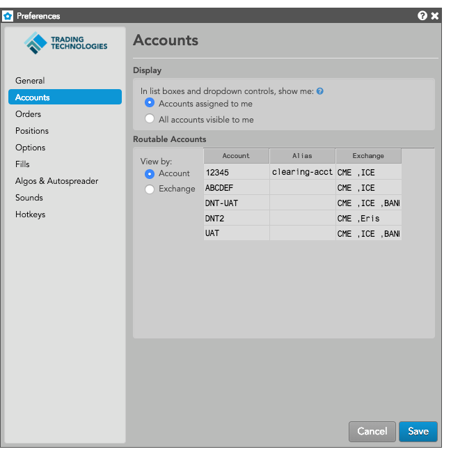
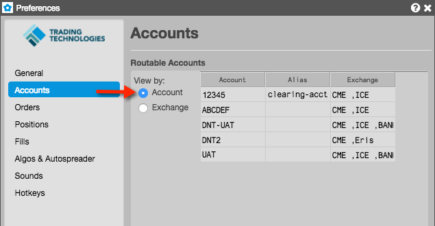
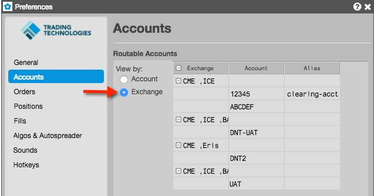

| Preference | Description |
|---|---|
| Accounts assigned to me | Display only accounts assigned to the user in list boxes and dropdowns for widgets that display accounts. |
| All accounts visible to me | For users with administrator rights, display all accounts in the company in list boxes and dropdowns for widgets that display accounts. |
Accounts are downloaded from the Setup database, and the account and exchange data displayed in Preferences is read-only. Accounts assigned to you are displayed in this section if they are configured as "Routable" in the Setup app. Any accounts configured as "Non-Routing" are not displayed.
Using a pair of radio buttons in the Routable Accounts section, you can select one of following viewing options:
When the Account view is selected, a table is displayed with accounts in the first column, and exchange connections that each account is assigned to shown in the third column. User-defined account aliases are shown in the second column when viewing by account. The Account view is displayed by default.

When the Exchange view is selected, a table is displayed with exchange connections assigned to accounts in the fist column, and a listing of each account assigned to the exchange connections in the second column. User-defined account aliases are shown in the third column when viewing by exchange. In both views, the column widths can be adjusted.

Use the Alias column in both views to enter an alias name for identifying an account. When the account list is displayed in order entry widgets, the alias name is prepended to the actual account name in parentheses. To add or modify an alias, double-click a cell in the Alias column and enter an alias name.